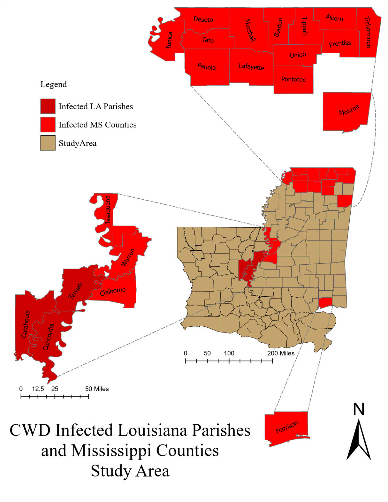
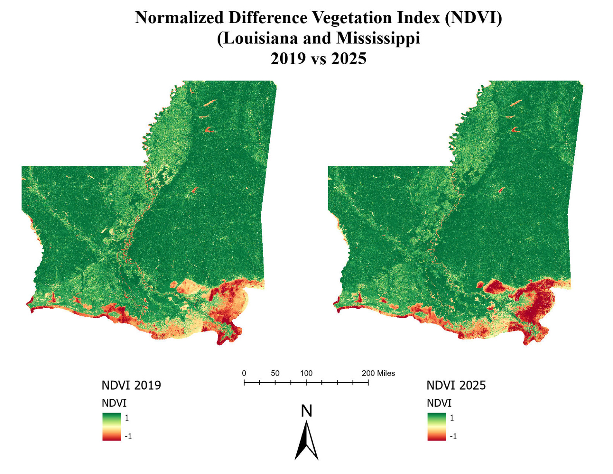
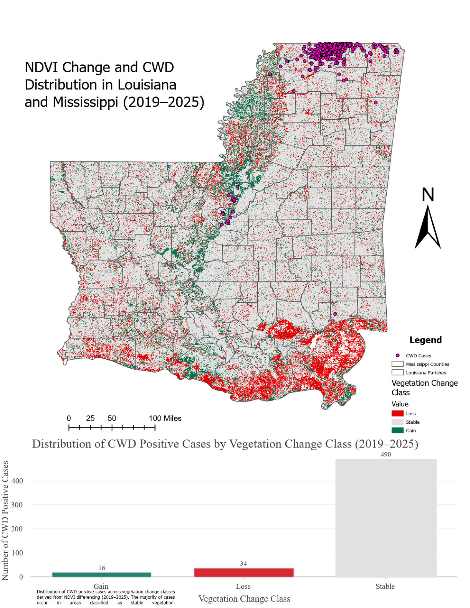

GIS | Remote Sensing | NDVI | Wildlife Disease Ecology | Environmental Analysis
This thesis research examines the relationship between landscape change and the spread of Chronic Wasting Disease across Louisiana and Mississippi. The project uses GIS, remote sensing, NDVI-based vegetation analysis, and spatial analysis to explore environmental patterns associated with CWD occurrence.
The workflow integrates CWD case locations, parish and county boundaries, vegetation change products, and multi-year remote sensing data to support environmental and wildlife disease analysis.

Study area showing infected Louisiana parishes and Mississippi counties used in the CWD landscape change analysis.

NDVI comparison showing vegetation conditions across Louisiana and Mississippi between 2019 and 2025.

Final results map combining vegetation change classes with CWD positive case distribution.